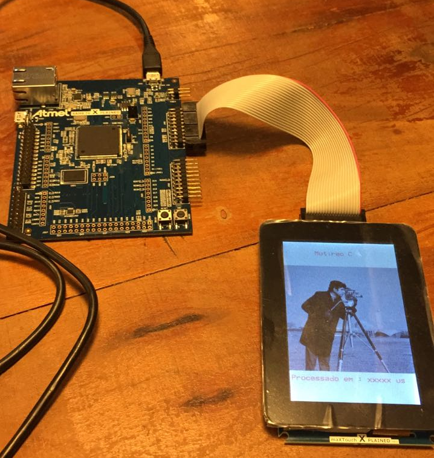
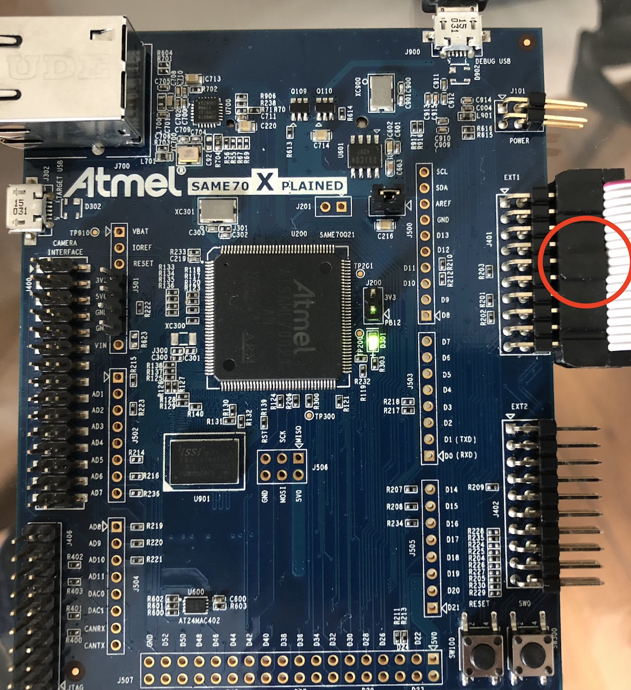
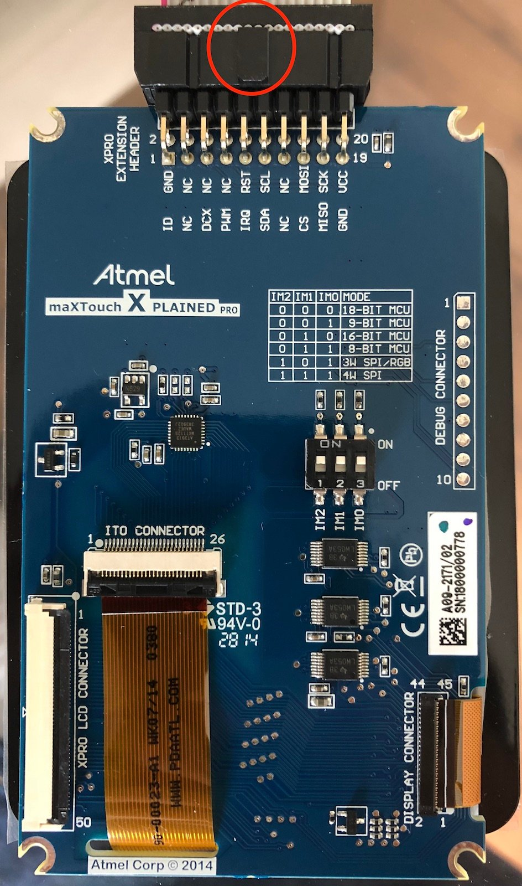
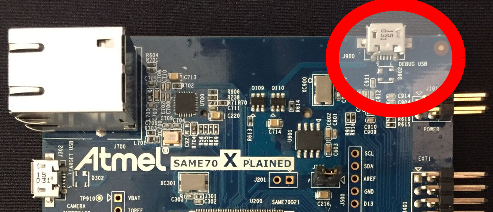
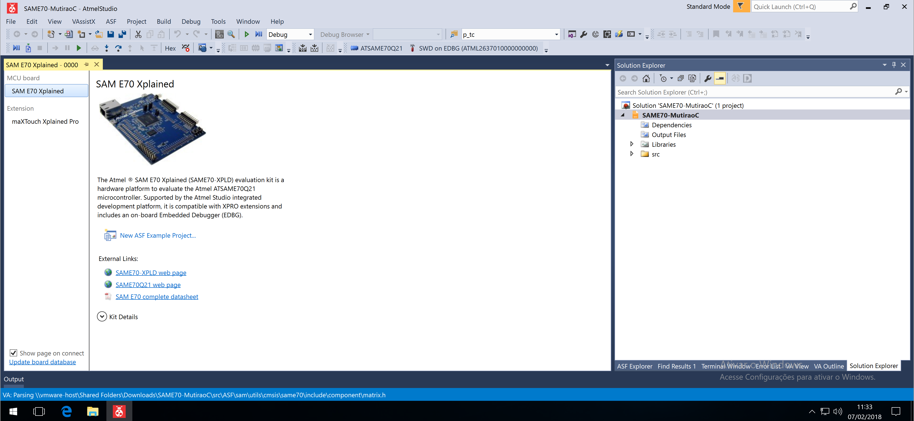
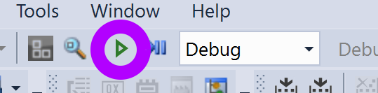
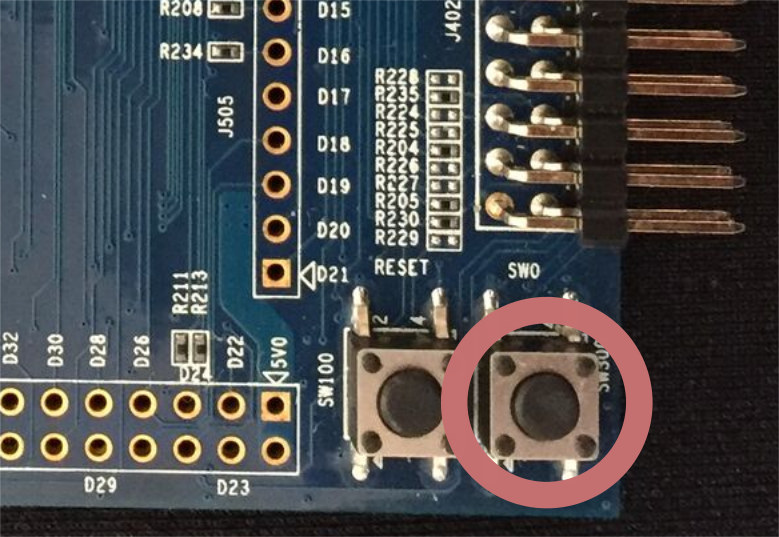

Embarcados - Parte 1
Warning
Essa atividade demanda sistema operacional Windows, conforme descrito na infra de Computação Embarcada
Nessa aula iremos trabalhar com os conceitos básicos da linguagem C aplicados ao processamento de imagem em sistemas embarcados. Para isso utilizaremos um kit de desenvolvimento com um microcontrolador ARM cortex M7 e um LCD colorido de 480x320 px conectado a esse kit.

Detalhe do material utilizado
- Kit : SAME70-XPLD
- Microcontrolador : ARM Cortex M7
- LCD : maXTouch Xplained Pro
Parte 1
Nesse primeira etapa iremos executar um código exemplo no sistema embarcado, para isso será necessário:
- Conectar o LCD ao kit
- Conectar o kit no computador
- Abrir e compilar o projeto no AtmelStudio
- Programar o microcontrolador
- Validar o resultado esperado
Antes de prosseguir você deve ter o repositório Labs C já clonado no seu computador (Windows).
Conectando o LCD
Warning
Tome cuidado ao manusear a placa, não coloque ela sobre outros materiais.


Considerando que os pré requisitos para a disciplina de Computação Embarcada já foram instalados.
Conectar o USB do programador no computador:

Tip 1
Note que a placa possui dois USB: DEBUG USB, usado para programar o uC e TARGET USB usado para projetos que demandam conectividade via USB.
AtmelStudio
Abra o projeto exemplo (SAME70-MutiraoC) localizado no repositório do 'Labs-de-C':
O projeto irá abrir na IDE do AtmelStudio como imagem a seguir:
.
Compilar e programar
A etapa atual será a de embarcar o código exemplo no uC, para isso basta clicar em Start Without Debug:
.
Testando
Uma vez embarcado o exemplo o LCD deverá exibir uma imagem. A primeira imagem que aparece é a imagem original sem nenhum tipo de modificação, ao apertar o botão SW0 do kit de desenvolvimento uma função (imageProcess()) é chamada e a imagem orignal é processada e seu resultado exibido na tela (junto com o tempo de processamento).
.
Tip 2
Se pressionar o outro botão o uC será reiniciado (reset).
Note
Reparou que o sistema de modo geral está muito lento? Vamos melhorar isso!